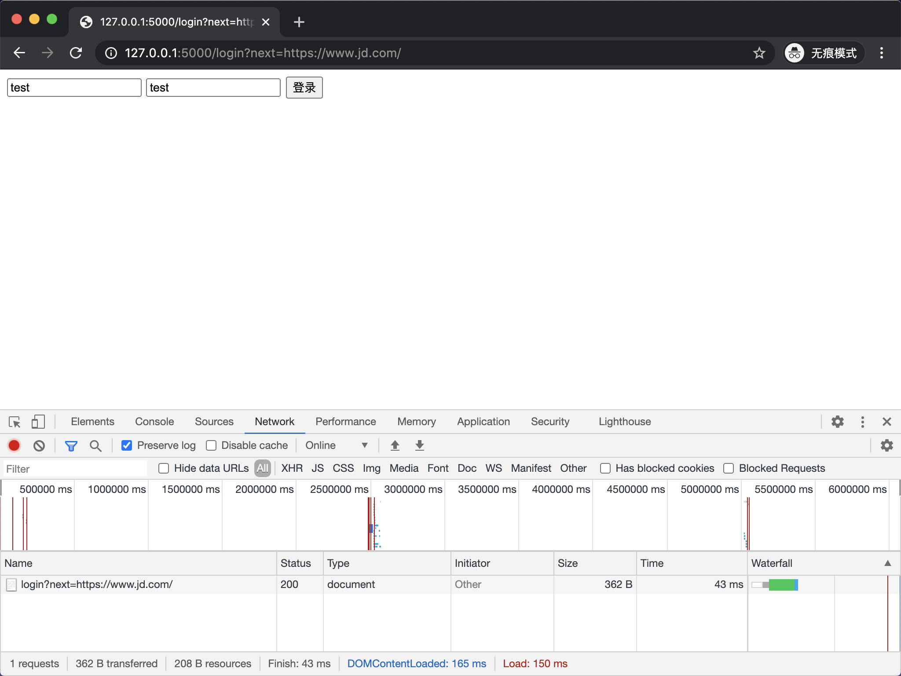
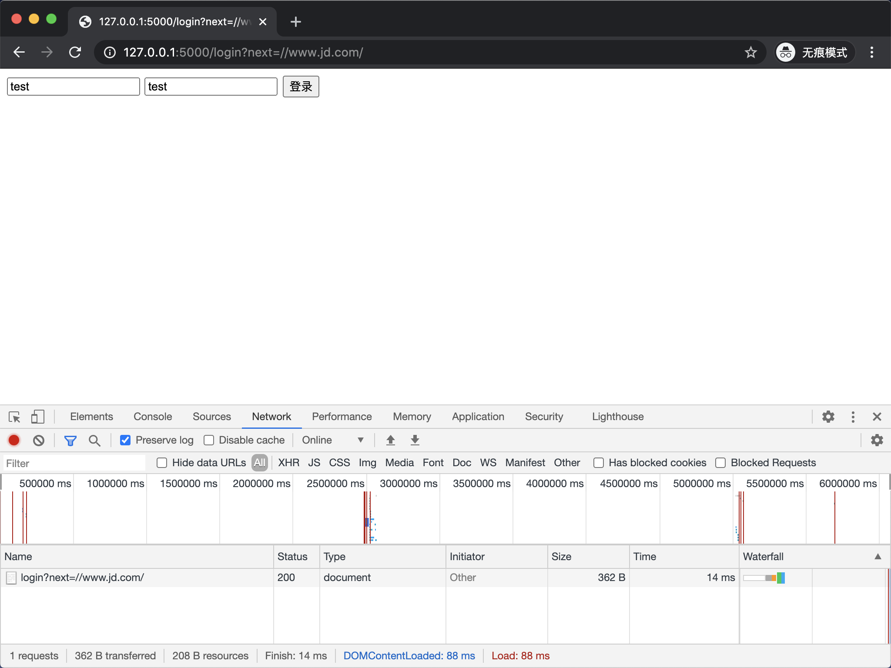

重定向攻击是攻击者利用网站开放重定向漏洞，将用户访问的网站重定向至恶意网站的一种攻击手段。
攻击原理 在编写 Web 程序时，如果不对重定向的 URL 进行检查，攻击者就可以诱导用户跳转到钓鱼网站进行恶意操作，如窃取用户信息、诱导用户转账等，以此来达到攻击目的。
攻击示例 这里我用 Flask 编写一个简单的 Web 应用来作为重定向攻击的示例。执行以下代码之前你需要使用 pip install flask 的方式安装 Flask。
1 2 3 4 5 6 7 8 9 10 11 12 13 14 15 16 17 18 19 20 21 22 23 24 25 26 27 28 29 30 31 32 33 34 35 36 37 38 39 40 41 42 43 44 45 from flask import Flask, request, redirect, make_responseapp = Flask(__name__) @app.route('/profile') def profile () : """用户信息""" session_id = request.cookies.get('session_id' ) if session_id: return '已登录' else : return redirect('/login?next=/profile' ) @app.route('/login', methods=['GET', 'POST']) def login () : """登录""" if request.method == 'POST' : form = request.form username = form.get('username' ) password = form.get('password' ) if username and password: next_url = request.args.get('next' , '/' ) response = make_response(redirect(next_url)) response.set_cookie('session_id' , '025fcb1587eea0a25493653dfcecc6f1' ) return response return '请输入用户名和密码' else : return """ <form method="post"> <input name="username" placeholder="username"> <input name="password" placeholder="password"> <button>登录</button> </form> """ if __name__ == '__main__' : app.run()
这个 Web 应用中包含了两个视图函数，profile视图函数通过判断请求中是否存在键为 session_id 的 Cookie 信息来确认用户是否登录，已登录则返回 已登录 提示信息，未登录则重定向到登录页面，并在 URL 中携带 next=/profile 参数。login 视图函数用来进行登录操作，其实就是给用户浏览器设置一个键为 session_id 的 Cookie 信息，登录成功后重定向到 next 参数所指定的 URL。
启动 Flask 应用，使用浏览器访问 http://127.0.0.1:5000/profile 则会被重定向到登录页面。
输入任意用户名和密码进行登录，登录成功后会自动重定向回用户信息页面，显示 已登录。
总结一下操作流程：
使用浏览器访问 http://127.0.0.1:5000/profile。
由于未认证，页面被重定向到登录页 http://127.0.0.1:5000/login?next=/profile。
填写登录表单，点击登录按钮，数据通过 POST 请求方式传递给 login 视图函数。
login 视图函数完成登录，同时重定向到 next 参数所指定的 URL，这里即为 /profile。此时 profile 视图函数判断用户已经登录，返回 已登录。
这个流程中，漏洞的入口就在第 2 步，页面被重定向到登录页 http://127.0.0.1:5000/login?next=/profile。其中 next=/profile 参数作为登录成功后将要重定向的页面。
此时，如果将 next=/profile 替换成 next=https://www.jd.com/，再次尝试以上流程，就会发现登录成功后，程序将被重定向到京东首页 https://www.jd.com/。
既然我们的程序可以被重定向到京东首页，那么就意味着也可以被重定向到任意网址，这是相当危险的。
假如攻击者做了一个跟我们的网站长得一样的网站，一般来说用户不会主动访问攻击者的网站，但攻击者通过短信、邮件等方式诱导用户点击了 next 参数指向恶意网站的链接，那么用户在登录成功以后将被重定向到恶意网站。而此时用户完全不自知，如果用户在恶意网站中的表单等提交了如银行账户、个人密码等信息，将会被直接发送至攻击者的服务器，攻击者拿到用户提交的信息，就可以做一些非法操作。
防范方法 防范重定向攻击最关键的就是要对重定向 URL 合法性进行校验。在进行重定向之前，判断如果 URL 不属于我们网站内部的 URL，则提示 重定向 URL 不正确，不进行跳转。修改后的代码如下：
1 2 3 4 5 6 7 8 9 10 11 12 13 14 15 16 17 18 19 20 21 22 23 24 25 26 27 28 29 30 31 32 33 34 35 36 37 38 39 40 41 42 43 44 45 46 from flask import Flask, request, redirect, make_responseapp = Flask(__name__) @app.route('/profile') def profile () : """用户信息""" session_id = request.cookies.get('session_id' ) if session_id: return '已登录' else : return redirect('/login?next=/profile' ) @app.route('/login', methods=['GET', 'POST']) def login () : """登录""" if request.method == 'POST' : form = request.form username = form.get('username' ) password = form.get('password' ) if username and password: next_url = request.args.get('next' , '/' ) if not next_url.startswith('/' ): return '重定向 URL 不正确' response = make_response(redirect(next_url)) response.set_cookie('session_id' , '025fcb1587eea0a25493653dfcecc6f1' ) return response return '请输入用户名和密码' else : return """ <form method="post"> <input name="username" placeholder="username"> <input name="password" placeholder="password"> <button>登录</button> </form> """ if __name__ == '__main__' : app.run()
我们只需要在程序中判断 URL 是否以 / 开头，因为内部链接的跳转通常不会写成带有主机名的 URL，而是以 / 开头的路径。
启动 Flask 应用，再次使用浏览器访问重定向到京东首页的链接 http://127.0.0.1:5000/login?next=https://www.jd.com/。

不出所料，现在外部链接已经能够被程序检测到，从而重定向失败。
但是，仅仅这样做是不够的。现在使用浏览器访问 http://127.0.0.1:5000/login?next=//www.jd.com/ 再次进行测试。

竟然重定向成功了！也就是说 //www.jd.com/ 是有效的网址，同时绕过了程序的检测。
所以我们不能单纯的以判断 URL 是否以 / 开头作为合法性校验，而要使用更加严谨的方式，修改代码如下：
1 2 3 4 5 6 7 8 9 10 11 12 13 14 15 16 17 18 19 20 21 22 23 24 25 26 27 28 29 30 31 32 33 34 35 36 37 38 39 40 41 42 43 44 45 46 47 48 49 50 51 52 53 54 55 from urllib.parse import urlparse, urljoinfrom flask import Flask, request, redirect, make_responseapp = Flask(__name__) def is_safe_url (url) : current_netloc = urlparse(request.host_url).netloc redirect_netloc = urlparse(urljoin(request.host_url, url)).netloc print(f'current_netloc: {current_netloc} , redirect_netloc: {redirect_netloc} ' ) return current_netloc == redirect_netloc @app.route('/profile') def profile () : """用户信息""" session_id = request.cookies.get('session_id' ) if session_id: return '已登录' else : return redirect('/login?next=/profile' ) @app.route('/login', methods=['GET', 'POST']) def login () : """登录""" if request.method == 'POST' : form = request.form username = form.get('username' ) password = form.get('password' ) if username and password: next_url = request.args.get('next' , '/' ) if not is_safe_url(next_url): return '重定向 URL 不正确' response = make_response(redirect(next_url)) response.set_cookie('session_id' , '025fcb1587eea0a25493653dfcecc6f1' ) return response return '请输入用户名和密码' else : return """ <form method="post"> <input name="username" placeholder="username"> <input name="password" placeholder="password"> <button>登录</button> </form> """ if __name__ == '__main__' : app.run()
这次编写一个 is_safe_url 函数专门用来校验 URL 合法性。urlparse 函数能够根据 URL 协议格式将 URL 解析为 6 个部分，其中 netloc 即为主机名和端口号。urljoin 函数用来合并两个 URL，以此将以 / 开头的 URL 转换成绝对路径的 URL，从而避免获取不到主机名和端口号。通过对比当前访问 URL 的 netloc 和重定向 URL 的 netloc 就能够判断 URL 是否合法。
再次使用浏览器访问 http://127.0.0.1:5000/login?next=//www.jd.com/。
1 2 # 控制台打印信息 current_netloc: 127.0.0.1:5000, redirect_netloc: www.jd.com
这次将会看到重定向失败的信息，说明此方法有效。
不要试图通过判断重定向 URL 是否包含当前网站的主机名来校验 URL 合法性，因为类似 https://example.org.attacker.com 也是一个合法的 URL。
如果网站确实需要重定向到合法的其他主机名中，则可以通过白名单的方式使校验通过。
当然，所谓安全都是相对的，并没有绝对的安全，开发者应该保持警惕，做到尽量降低安全风险。